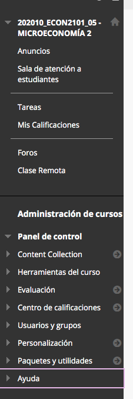

Introducción
-
¿Por dónde comienzo?
Juegue un rato con Blackboard Collaborate Ultra para comenzar a construir una experiencia virtual grabando videos cortos. Usted puede poner un aula como NO VISIBLE PARA SUS ESTUDIANTES. Ahí puede hacer todas las pruebas que quiera sin que sus estudiantes vean. Cree actividades y utilice los anuncios en Sicua+. Con los siguientes dos "Get Started" ya dio el primer paso.
Échele un ojo a la sección de Diseño Pedagógico. No es igual hacer una clase virtual que una clase presencial. Finalmente, hable con sus colegas. La comunidad es el aliado más importante para el aprendizaje colectivo. Diviértase y comparta sus experiencias, frustraciones y logros.
Lea una guía de aspectos básicos para dictar clases virtuales de la Vicerrectoría Académica.
-
¿Cómo uso Collaborate? Guías de 10 minutos
Para comenzar, vaya a su curso en Sicua+. En el menú de la izquierda aparece un "+" encerrado en un círculo. Ahí haga clic en "enlace de herramienta" y escriba el nombre de su salón virtual (Por ejemplo "Sala virtual") y seleccione en Tipo: Blackboard Collaborate Ultra. Puede disponer si desea que esté disponible para sus estudiantes en el menú, o solo para usted.

Haciendo clic en crear sesión encontrará todas las configuraciones. Para invitar a sus estudiantes recuerde poner "Desbloquear sala del curso". Copie el enlace que se encuentra en el rol de participante. Envíelo a sus estudiantes, PONGA GUARDAR y ¡listo!

También puede consultar el “Get Started” (Empecemos) oficial de Blackboard para Moderadores o Participantes.
Sin embargo, el siguiente RÁPIDO RECORRIDO MUY DETALLADO le dará una idea general de todos los menús que puede encontrar en Blackboard Collaborate Ultra.
-
¿Cómo uso Sicua+? Guías de 10 minutos
Sicua tiene múltiples funciones. Puede subir contenido, poner evaluaciones, enviar anuncios, etc. En su curso de Sicua, en el menú de la izquierda, abajo, encontrará una opción de ayuda/tutoriales de video. Allí podrá consultar videos cortos (menos de 5 min.) con información sobre cómo crear contenido, actividades, evaluaciones, etc. Esos mismos videos están disponibles también en esta cuenta de Youtube.

Blackboard Collaborate
-
¿Qué puedo hacer con Collaborate?
Blackboard Collaborate Ultra es una herramienta versátil y poderosa. Usted puede, entre otras cosas:
- Conectarse con sus estudiantes en video-conferencia simultánea.
- Compartir pantalla o ventana de programa con sus estudiantes.
- Grabar las sesiones.
- Compartir un “tablero” o “pizarra” virtual en vivo con sus estudiantes.
- Y sus estudiantes pueden:
- Levantar la mano.
- Escribir por chat público o privado.
- Compartir voz o video si el moderador los deja.
-
¿Qué cosas puedo configurar de Collaborate?
Según el propósito de su sesión, usted puede configurar propiedades de su clase virtual, entre otras:
- Descargar o no descargar grabaciones de la clase.
- Asignar roles:
- Moderador: Todos los permisos. Ve quién levanta la mano, configuran la sesión, etc. Usted es moderador por defecto, siendo profesor.
- Presentador: Se le puede dar la palabra a un estudiante para que presente, sin concederle todos los permisos.
- Participante: Pueden presenciar la sesión. El moderador les puede permitir compartir audio o video, incluso dibujar en la “pizarra virtual” si desea.
- Puede programar que las sesiones sean periódicas, (clases cada semana a tal hora).
-
¿Cómo grabo mis clases con Collaborate?
RECOMENDACIÓN. Si desea grabar para sus estudiantes, no en vivo, lo más recomendable es grabar y subir los videos Offline a plataformas externas como YouTube. Luego, compartir el enlace. Vea la sección de "Cómo hago grabaciones offline" en más herramientas técnicas.
De esta manera usted puede grabar sus sesiones desde Blackboard Collaborate Ultra. Verifique que se está grabando el audio al igual que su pantalla o su aplicación (por ejemplo Power Point). En la parte inferior de la ventana verá los botones para habilitar:
Para ver las grabaciones vaya a la página de sesiones. En el lugar de las tres líneas paralelas encontrará el menú correspondiente donde aparece "Grabaciones":
-
Limitaciones de Collaborate
- Al cerrar las sesiones no se guarda lo que haya hecho en ellas. ya sea que haya subido archivos, creado grupos o los mensajes de chat.
- Solo se pueden compartir archivos pptx, pdf e imágenes. Si tiene un documento de Word, conviértalo a alguno de esos formatos.
- No es posible descargar los archivos compartidos.
Sicua+ (Por si en realidad nunca lo usó)
-
¿Cómo envío un taller por Sicua+?
A continuación ecuentra un instructivo muy rápido y claro.
-
¿Cómo envío un recordatorio por Sicua+?
Utilizando el centro de calificaciones, puede enviar recordatorios a los estudiantes sobre entregas. Haciendo click derecho sobre el nombre de la actividad / evaluación aparecerá un menú donde encontrará Enviar recordatorio (send reminder) que enviará un correo a los estudiantes.
-
¿Puedo hacer evaluaciones por Sicua+?
¡Sí! Blackboard tiene información detallada en este enlace sobre cómo crear una prueba desde Sicua+.
¡Además, use Respondus! para hacer evaluaciones a sus estudiantes mediante el navegador bloqueado LockDown Browser. Lea la guía en el enlace.
Para las pruebas de Sicua+ en Panel de control > Herramientas del curso > Pruebas, sondeos y conjuntos, puede crear pruebas con diferentes tipos de preguntas.
En Sicua+ puede:
- Puede crear evaluaciones que mezclen diferentes tipos de preguntas.
- Se puede crear bancos de preguntas y dejar que Sicua escoja aleatoriamente X preguntas del banco.
- Las preguntas escogidas pueden salir de forma aleatoria, y el orden de las respuestas también (en caso de preguntas de selección múltiple). Esto puede ser muy útil para construir conjuntos de preguntas que sean diferentes entre estudiantes.
- Usted puede configurar diferentes módulos dentro de la evaluación, y puede escoger que cada módulo aleatorice sobre Y subconjunto de preguntas del banco total de preguntas que tiene en su curso de Sicua.
Diseño pedagógico
-
Keep it simple
Como primer consejo de diseño. Recuerde que existen cientos de herramientas que puede utilizar virtualmente para una amplia variedad de propósitos. Como comité de Docencia le recomendamos hacer pruebas de a poco incrementalmente, con configuraciones muy simples y básicas en principio. Una vez se sienta bien y con confianza ya puede incrementar las funciones de sus cursos virtuales. Este es un proceso de aprendizaje para todos. Está bien sentirse abrumado las primeras veces.
-
¿Qué me recomienda para mis evaluaciones?
- Considere hacer evaluaciones con libros abiertos, apuntes y acceso a internet. Procure hacer preguntas complejas y, a la vez, específicas. Por ejemplo “Defina un problema de acción colectiva y dé un ejemplo específico de su contexto familiar”.
- Puede pensar en otros formatos de evaluaciones: exámenes orales, videos, podcasts, infografías o presentaciones (pptx o prezi).
- Incluya en las pruebas o actividades preguntas en las cuales los estudiantes escriban una reflexión o describan su experiencia de escribir el ensayo o hacer el examen.
- Abra la posibilidad de que los estudiantes puedan hacer más de un intento en cada evaluación, pues es posible que tengan problemas informáticos que impidan llevarla a cabo exitosamente en el primer intento.
-
¿Qué tengo en cuenta para mis clases?
Es diferente diseñar un curso virtual, que adaptar un curso presencial a uno virtual. Hay temas que son naturalmente diferentes en la experiencia. Le recomendamos que tenga en cuenta:
- No todo tiene que ser sincrónico. Identifique qué actividades pueden hacer los estudiantes sin estar conectados al mismo tiempo.
- Antes de empezar las clases sincrónicas abra todas las pestañas, archivos o enlaces que piensa compartir durante la clase. Asegúrese de estar en un lugar con buena iluminación.
- Abra la sesión unos minutos antes de la hora de reunión para solucionar cualquier problema técnico que se pueda presentar y dar tiempo a los estudiantes para conectarse.
- Empiece la clase pidiéndole a los estudiantes escribir un saludo en el chat para verificar que todos están oyendo y viendo.
- Empiece la clase con el orden del día. Presente una agenda clara con la descripción, los objetivos y los momentos de la sesión, como un abstract y una tabla de contenidos. Puede colgar esta agenda en Sicua antes de cada sesión para que los estudiantes tengan listos los materiales necesarios.
-
¡Dígame más! Recomendaciones para las clases 2
Otras recomendaciones incluyen:
- Intercale sesiones magistrales de 15 o 20 minutos con actividades: resolver un cuestionario, comprobación, ejercicio o escribir un párrafo. Durante el tiempo de la actividad indique a los estudiantes que pueden hacer preguntas en el chat.
- Diseñe videos cortos, cada uno sobre un único concepto, con duración entre 5-15 minutos máximo. No haga un video de 1h20 equivalente a sus clases presenciales, pues serán muy pesados para subirlos a Sicua+ o a otras plataformas de internet, serán muy difíciles de diseñar y grabar, y probablemente los estudiantes no lo verán.
- Diseñe una clase a partir de varios videos cortos, que en su conjunto permitan abordar un tema complejo. Piense en clases modulares.
-
¿Y para ser top? Recomendaciones clase 3
Además:
- Tenga en cuenta que sus estudiantes muchas veces tendrán que compartir tecnología con otros miembros del hogar, así que los videos cortos permitirán una mejor organización del tiempo que cada estudiante tiene con esa tecnología compartida.
- Es posible que sus estudiantes tengan menos conocimiento de tecnología de lo que usted cree, así que es mejor tener instrucciones precisas sobre cómo usar el aula o la herramienta virtual que usted propone. Apóyese en los instructivos que tiene la universidad en cada caso (página de la DSIT).
Más herramientas pedagógicas
-
La virtualidad me apasiona ¿Cómo diseño un curso innovador (con más tiempo)?
Esta es la página oficial de virtualidad de la Universidad.
Dese la oportunidad de pensar diferente su curso. No grabe largas sesiones de hora y media. Incrementalmente rediseñe. Lea este artículo para dar el salto, escrito por Pablo Sanabria, y se llevará una mejor idea de cómo se diferencia la educación virtual de la presencial.
Vea esta ficha.
Encontrará más fichas tutoriales en la página de conecta-te Unidandes, con información incluso para monitores.
-
Ejemplo para explicar esto a mis estudiantes (HPE)
Aquí hay dos documentos que podrían serle útiles como una guía para comunicar a sus estudiantes sobre el proceso de adaptación que viene. Primero, un anuncio sobre virtualidad para introducir los cambios. Segundo, un texto sobre cómo va a funcionar el curso describiendo sus dinámicas.
-
¿Qué es el Apredizaje Activo?
La idea que los estudiantes aprenden más al estar activamente pensando en lo que se está discutiendo, resolviendo problemas y ejercicios. El aprendizaje activo puede serle especialmente útil para incrementar el desempeño de sus estudiantes en los entornos virtuales (por ejemplo intercalando videos cortos y ejercicios).
-
Sigo perdido ¿A quién llamo?
Para este tipo de procesos, el aliado más fuerte es la comunidad. Pregunte a sus colegas, dialogue no solo sobre lo técnico, sino sobre qué herramientas va a usar, qué dificultades ha tenido, etc. Además, siempre puede consultar a la DSIT. Finalmente, recuerde que recuerde que el Comité de Docencia de la Facultad siempre está pendiente de los procesos educativos. Puede escribir a ae.orozco10@uniandes.edu.co.
Más herramientas técnicas
-
¿Cómo promuevo interacciones en un entorno virtual?
- Participe en los foros. Destaque buenas participaciones y preguntas y responda a las preguntas utilizando el nombre del estudiante.
- Además de los foros que puede crear en sicua+ también puede utilizar padlet (https://software.uniandes.edu.co/padlet/) que funciona como un corcho / muro en el cual todos los participantes pueden pegar infografías, videos, notas de voz, etc.
-
¿Cómo puedo reunirme virtualmente?
Le recomendamos el siguiente tutorial detallado de la Facultad de Artes y Humanidades que le comenta sobre Microsoft Teams y Blackboard Collaborate.
Webex le permite reunirse virtualmente también. Para iniciar en reuniones virtuales ingrese con su cuenta uniandes. A continuación el tutorial de Cisco para inciar de ceros.
-
¿Cómo hago grabaciones offline?
Usted puede grabar power point, o puede usar en Windows el reproductor VLC donde puede grabar offline. ¡Ojo! Para que le salga la flechita del cursor en el video debe configurarla así. Para equipos con Mac OS, puede grabar así su pantalla.
Siga esta guía de la Facultad de Artes y Humanidades para la grabación exitosa de sus videos y clases.
Para grabar sus sesiones en vivo con estudiantes, siga las instrucciones de Blackboard Collaborate Ultra (así).
-
Otras apps y recursos de tablero
Para sus aulas virtuales existen otros recursos que puede considerar.
Por una parte, EduCreations es una aplicación para Ipad que le permite grabar sus clases. La versión pro va a estar gratuita hasta mayo 1.
La app Splashtop puede usarse para proyectar cosas de su tablet a su computador. Puede usar el free trial.
Otra forma similar a EduCreations de grabar sus clases es ExplainEverything.
Finalmente, recuede que en las tiendas de Apple y Android puede encontrar cientos de otras app de tablero blanco gratuitas.
-
No se le olvide
La Universidad da a cada cuenta de correo uniandes 1 tera de almacenamiento libre en One Drive, al cual puede acceder desde su correo.

También puede solicitar espacio en Dropbox según necesidad.
-
Sigo perdido ¿A quién llamo?
De nuevo, para este tipo de procesos, el aliado más fuerte es la comunidad. Pregunte a sus colegas, dialogue no solo sobre lo técnico, sino sobre qué herramientas va a usar, qué dificultades ha tenido, etc. Además, siempre puede consultar a la DSIT. Finalmente, recuerde que recuerde que el Comité de Docencia de la Facultad siempre está pendiente de los procesos educativos. Puede escribir a ae.orozco10@uniandes.edu.co.